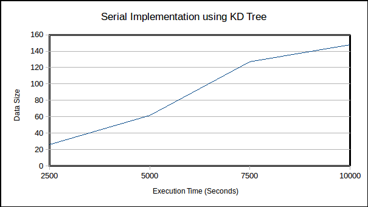
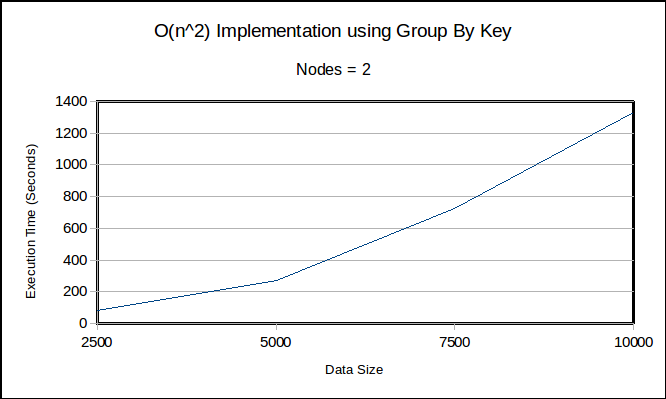
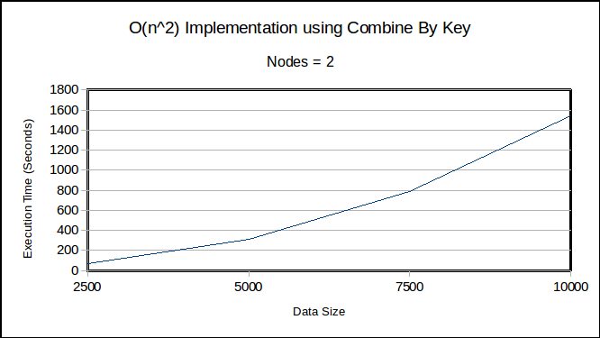
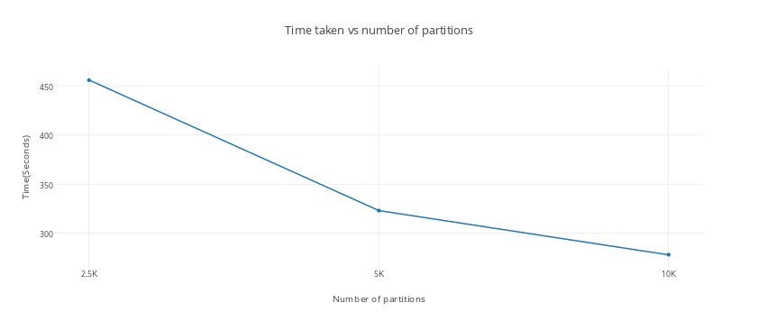
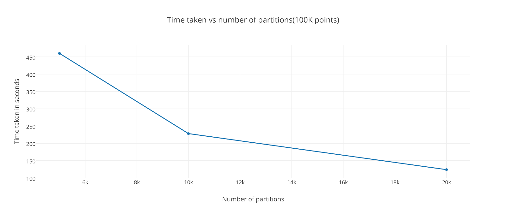
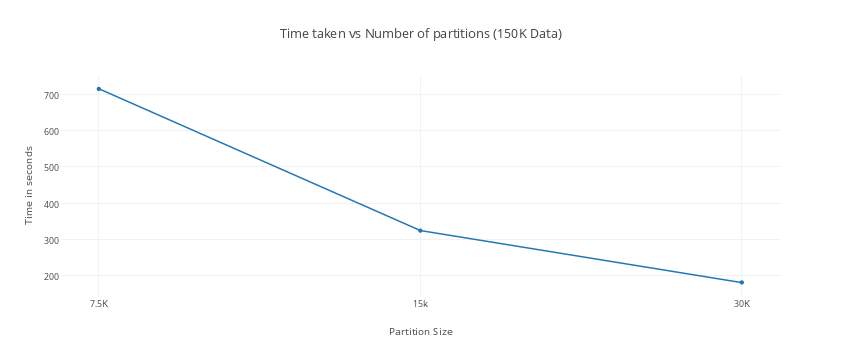
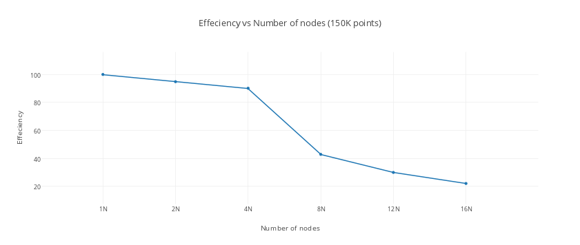

CSE 603: Parallel and Distributed Processing
Sarthak Bhat (50134371)
Karthik Kiran (50133145)
Under the guidance of:
Dr. Jaroslaw Zola
Introduction:
This project involves solving k nearest neighbor problem using Sparks distributed processing technology. We obtained data set of different retail stores distribution in Manhattan, NY over a region of 200 sq km. The problem involved computing k nearest neighbor for each store in this data set.
Implementation:
We have implemented four different solutions which includes a serial solution,
O(n2) solution and an optimized solution to the same problem and compared the pros and cons of each solution.
Serial Implementation: Serial solution was the first of all implementations which we implemented using pythons spatial KD tree library. This was our benchmark with which we wanted to compare over other implemented solutions. The algorithm’s running time was O(nlogn)
Spark O(n2) Implementation with group by key: This implementation involved computing distance of every point with every other point , sorting it based on distance and the returning k nearest for each point. This was a O(n2) implementation.
Spark O(n2) Implementation with combine by key: This implementation was a modified version of the second implementation. After reading the Cloudera blog we replaced the group by key by a custom reducer to understand the performance benefit .
Optimal KNN: This implementation involved clustering the points based on the distance from origin into different partitions. We ran nearest neighbor algorithm on each partition and extracted the k nearest neighbors. The below example summarized the implemented algorithm.
Consider you have input which has n points where each point p=(x,y) contains the latitude and longitude of the place. We went ahead and calculated the the euclidean distance of each point from the origin which helped us represent each point in 1D. We then sorted all the points based on this value.
The sorted 1D array was divided into p parts where each part was associated with partition ID. The reasoning behind this is that the k nearest neighbors of each point will be in the current partition or in the adjacent partition if the partition size is appropriately chosen.
We then associate each point to a partition id and the points which are on the boundary gets associated with two partitions. We compute distance of every point with the every point in the partitions it belongs to obtain k nearest neighbor.
Analysis:
Experiment 1
Performance of Serial and N Square implementations
i) Serial Implementation using KD Tree in Python
|
Data Size |
Execution Time (Seconds) |
|
2500 |
26 |
|
5000 |
62 |
|
7500 |
127 |
|
10000 |
148 |

ii) N Square Implementation using Group By Key
Parameter Settings:
Number of Nodes = 2
Executors per Node = 1
Executor Cores = 4
|
Data Size |
Execution Time (Seconds) |
|
2500 |
81 |
|
5000 |
274 |
|
7500 |
726 |
|
10000 |
1333 |

iii)
N
Square Implementation using Combine By Key
Parameter Settings:
Number of Nodes = 2
Executors per Node = 1
Executor Cores = 4
|
Data Size |
Execution Time (Seconds) |
|
2500 |
73 |
|
5000 |
311 |
|
7500 |
792 |
|
10000 |
1545 |

As we see from the above experiments that serial implementation which uses KD Tree and has a running time O(nlogn) easily outperforms the parallel O(n2) algorithm. Hence we decided to use a new approach by clustering the points into groups based on their distance from the origin. The results of this program is shown below.
Experiment 2
Heuristic for choosing the value of no of partitions Optimal KNN.
We used original data set which had around 85000 points for this experiment. Choosing the right value of partition plays a very critical role on the running time. We were able to verify this by changing the number of partitions for the same data size and observing the behavior pattern. We knew that Datasize/NoOfParts>=k to maintain the minimum accuracy.
As expected as the number of partitions increases the time taken decreases. We observed the same behavior over different data sizes which we have plotted in the below graph. We ran each of this experiment on 2 Nodes with 1 executor where each executor had 4 cores. The value of k(Number of nearest neighbors) was set to 5. The ratio of data size to number of partition was varied between 5,10 and 20.
a) 50K points grouped into partitions of 10K,5K and 2.5K

b)100K points grouped into partitions of 20K,10K and 5k

c)150 K points grouped into 30K,15K and 7.5K

Experiment 3
Performance of Optimal Knn with large data size:
This experiment was performed to understand the scalability performance of our code with data size. Our existing code does group By based on number of nodes. If we have more executors means we can do more group By operations in parallel and hence we can make use of the all the executors that are available. Hence the output will be available in different parts depending on the number of nodes.
In the below experiment we have doubled the data points along with the number of nodes at each step keeping the ratio between them constant. As expected we see similar run times which indicates strong scalability.
|
Data Size |
Nodes |
Execution Time (Seconds) |
|
50,000 |
1 |
151 |
|
100,000 |
2 |
163 |
|
200,000 |
4 |
175 |
|
400,000 |
8 |
193 |
|
800,000 |
16 |
211 |
Experiment
4
Performance of Optimal Knn with number of nodes:
Data Size=150,000; Number of Executor cores=4; Number of executors per node=1
For this experiment we had to limit our data set to 150K points. This is the maximum data one node can handle beyond which you can expect shuffle exceptions i.e the size of the data file to be sorted exceeds the available disk space on the worker node. So as we see the time taken reduces as the number of nodes double. But after a point the time remains the same which indicates that we must choose the amount of nodes to run on based on data size. For 1 million points or beyond we observed that 16 nodes is very useful. Since we could not get the value of T1 for one million we conducted this experiment on 150K points. However in the previous experiment showed that the current solution is scalable on bigger data sets.

|
Nodes |
Execution Time (Seconds) |
Speed Up |
Efficiency |
|
1 |
220 |
1 |
100 |
|
2 |
116 |
1.89 |
94.82 |
|
4 |
61 |
3.60 |
90.16 |
|
8 |
64 |
3.43 |
42.96 |
|
12 |
61 |
3.60 |
30.05 |
|
16 |
62 |
3.54 |
22.17 |
Conclusion and Future Scope:
As we observed that we were able to beat both serial and O(n2) implementation, K nearest neighbor is a really interesting problem to solve using parallel computing techniques. We have solved the problem for a 2d data points, however it would be really interesting to implement this for higher dimensional data sets. Also the performance of the current solution was completely based on the number of nodes available. We could consider more aspects on memory, executor cores and fine tune the performance.